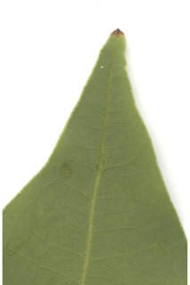
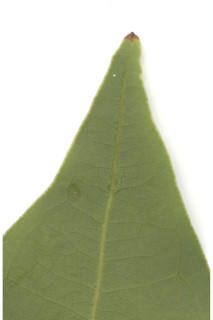

Tree up to 6 m tall.
6 ಮೀ.ವರೆವಿಗೆ ಬೆಳೆಯುವ ಮರಗಳು.
6 മീറ്റര് വരെ ഉയരമുളള മരങ്ങള്.
மரங்கள் 6 மீ. உயரம் வரை வளரக்கூடியது.
Bark smooth, light brown;
ತೊಗಟೆ ನಯವಾಗಿದ್ದು, ತೆಳು ಕಂದು ಬಣ್ಣ ಹೊಂದಿರುತ್ತದೆ.
ഇളം തവിട്ട് നിറമുളള, മിനുസമായ പുറംതൊലി
மரத்தின் பட்டை வழுவழுப்பானது, வெளிறிய ப்ரவுன் நிறமானது.
Branchlets slender, angular, minutely subsericeous.
ಕಿರುಕೊಂಬೆಗಳು ತೆಳುವಾಗಿರುತ್ತವೆ ಮತ್ತು ಕೋನಯುಕ್ತವಾಗಿದ್ದು ಸೂಕ್ಷ್ಮವಾದ ಉಪ-ರೇಷ್ಮೆ ರೋಮಸಹಿತವಾಗಿರುತ್ತವೆ.
സൂക്ഷ്മമായി നീളന് സില്ക്ക് രോമങ്ങള് നിറഞ്ഞ, കോണുളള, നേര്ത്ത ഉപശാഖകള്.
சிறிய நுனிக்கிளைகள் மெல்லியது, குறுக்குவெட்டுத் தோற்றத்தில் கோணங்களுடையது, நுண்ணிய உரோமங்களுடையது.
Leaves simple, opposite to subopposite; petiole 0.5-1.5 cm, planoconvex in cross section, glabrous; lamina 7-11 x 2-4 cm, elliptic-oblong to lanceolate, apex acuminate, base acute, margin entire, chartaceous; trinerved, basal; lateral nerves not reaching the leaf tip, tertiary_nerves horizontally_percurrent; higher order nerves closely reticulate.
ಎಲೆಗಳು ಸರಳವಾಗಿದ್ದು,ಅಭಿಮುಖದಿಂದ ಉಪಅಭಿಮುಖವರೆಗಿನ ಮಾದರಿಯಲ್ಲಿ ಜೋಡನೆಗೊಂಡಿರುತ್ತವೆ;ತೊಟ್ಟುಗಳು 0.5-1.5 ಸೆಂ.ಮೀ. ಉದ್ದವಿರುತ್ತದೆ ಮತ್ತು ಅಡ್ಡ ಸೀಳಿದಾಗ ಸಪಾಟ ಪೀನಮಧ್ಯ ಆಕಾರದಲ್ಲಿರುತ್ತವೆ; ಪತ್ರಗಳು 7-11 x 2-4 ಸೆಂ.ಮೀ. -ವರೆಗಿನ ಗಾತ್ರ ಹೊಂದಿದ್ದು ಅಂಡವೃತ್ತ-ಚತುರಸ್ರದಿಂದ ಭರ್ಜಿಯವರೆಗಿನ ಆಕಾರ -ದಲ್ಲಿರುತ್ತವೆ. ಪತ್ರದ ತುದಿ ಕ್ರಮೇಣ ಚೂಪಾಗುವ ಮಾದರಿಯಲ್ಲಿರುತ್ತದೆ;ಬುಡ ಚೂಪಾಗಿರುತ್ತದೆ;ಅಂಚು ನಯವಾಗಿರುತ್ತದೆ;ಪತ್ರಗಳ ಮೇಲ್ಮೈ ಕಾಗದವನ್ನೋಲುವ ಮಾದರಿಯಲ್ಲಿರುತ್ತದೆ;ಪತ್ರಗಳು 3 ಆಧಾರ ನಾಳಗಳನ್ನು ಹೊಂದಿದ್ದು ಪಾರ್ಶ್ವ ನಾಳಗಳು ಎಲೆಯ ಅಗ್ರವನ್ನು ತಲುಪುವುದಿಲ್ಲ; ಮೂರನೇ ದರ್ಜೆಯ ನಾಳಗಳು ಲಂಬ ರೇಖೆಗೆ ಸಮಕೋನದಲ್ಲಿರುತ್ತವೆ ಹಾಗೂ ಎಲೆದಿಂಡಿಗೆ ಅಡ್ಡವಾಗಿ ಕೂಡುತ್ತವೆ;ಉನ್ನತ ದರ್ಜೆಯ ನಾಳಗಳು ತೀರಾಸನಿಹವಾಗಿದ್ದು ಜಾಲಬಂಧ ನಾಳ ವಿನ್ಯಾಸದಲ್ಲಿರುತ್ತವೆ.
ലഘുവായ ഇലകള്, സമ്മുഖം തൊട്ട് ഉപസമ്മുഖം വരെയാകാം; ഛേദത്തില് ഒരുഭാഗം പരന്നും മറുഭാഗം ഉരുണ്ടുമിരിക്കുന്ന ഘടനയുളള അരോമിലമായ ഇലഞെട്ടിന് 0.5 സെ.മീ മുതല് 1.5 സെ.മീ വരെ നീളം; പത്രഫലകത്തിന് 7 സെ.മീ തൊട്ട് 11 സെ.മീ വരെ നീളവും 2 സെ.മീ തൊട്ട് 4 സെ.മീ വരെ വീതിയും, ആകൃതി ദീര്ഘവൃത്തീയ-ആയതാകാരം തൊട്ട് കുന്താകാരം വരെയാകാം, ദീര്ഘപത്രാഗ്രം, പത്രാധാരം നിശിതമാണ്, അരികുകള് അവിഭജിതമാണ്, കടലാസ് പോലത്തെ പ്രകൃതം; ആധാരത്തില് 3 ഞരമ്പുകളുളളതാണ്; പാര്ശ്വസിരകള് പത്രാഗ്രത്തിലെത്താത്തവയാണ്; തിരശ്ചീന പെര്കറന്റ് വിധത്തിലുളള ത്രിതീയ ഞരമ്പുകള്; മറ്റ് ചെറുഞരമ്പുകള് അടൂത്ത ജാലിതമാണ്.
இலைகள் தனித்தவை, எதிரடுக்கம் முதல் கிட்டதட்ட எதிரடுக்கம் போன்றவை; இலைக்காம்பு 0.5-1.5 செ.மீ., குறுக்குவெட்டுத் தோற்றத்தில் பிளேனோகான்வக்ஸ், உரோமங்களற்றது; இலை அலகு 7-11 X 2-4 செ.மீ., நீள்வட்டம்-நீள்சதுரம் முதல் ஈட்டி வடிவானது, அலகின் நுனி அதிக்கூரியது, அலகின் தளம் கூரியது, அலகின் விளிம்பு முழுமையானது, சார்ட்டேசியஸ், மூன்று நரம்புகளை அலகின் தளத்திலே கொண்டது; பக்கநரம்புகள் இரண்டும் அலகின் நுனி வரை செல்லாதது, மூன்றாம் நிலை நரம்புகள் விளிம்பை நோக்கிய கிடைமட்டத்தில் இணையான பெர்க்கரண்ட்; மற்ற சிறு நரம்புகள் நெருக்கமான வலைப்பின்னல் போன்றது.
Flowers axillary panicled cymes, few flowered, glabrous.
ಪುಷ್ಪಮಂಜರಿ ಅಕ್ಷಾಕಂಕುಳಿನ ಕೆಲವು ಹೂಗಳನ್ನೊಳಗೊಂಡ ಪುನರಾವೃತ್ತಿಯಾಗಿ ಕವಲೊಡೆಯುವ ಮಧ್ಯಾರಂಭಿ ಮಾದರಿಯದಾಗಿರುತ್ತದೆ ಮತ್ತು ರೋಮರಹಿತ -ವಾಗಿರುತ್ತದೆ.
അരോമിലമായ, ഏതാനും പൂക്കള് മാത്രമുളള പൂങ്കുലകള്, കക്ഷീയ പാനിക്കിള് സൈമുകളാണ്.
மலர்கள் இலைக்கோணங்களில் காணப்படும். பேனிக்கிள்டு சைம், குறைந்த எண்ணிக்கையில் மலர்களுடையவை, உரோமங்களற்றது.
Berry, ellipsoid, apiculate; fruiting_perianth_cup shallow with persistent lobes; seed 1.
ಬೆರ್ರಿಗಳು ಅಂಡವೃತ್ತದ ಆಕಾರದಲ್ಲಿದ್ದು ಅಗ್ರದಲ್ಲಿಸೂಕ್ಷ್ಮವಾದ ಮೊನಚು ಮುಳ್ಳನ್ನು ಹೊಂದಿರುತ್ತವೆ ; ಕಾಯಿಗಳ ಪುಷ್ಪಾವರಣದ ಬಟ್ಟಲು ಆಳವನ್ನು ಹೊಂದಿರುವುದಿಲ್ಲ ಮತ್ತು ಶಾಶ್ವತವಾದ ದಳಗಳ ಸಮೇತವಿರುತ್ತವೆ ಹಾಗೂ ಒಂದು ಬೀಜವನ್ನೊಳ -ಗೊಂಡಿರುತ್ತವೆ.
ഒറ്റവിത്തുളള കായ, ഉറച്ചുനില്ക്കുന്ന കര്ണ്ണങ്ങളുളള, ആഴംകൂറഞ്ഞ ഫലപരിദളകപ്പോടുകൂടിയ, അറ്റത്തൊരു മുനപ്പുളള ദീര്ഘഗോളാകാര ബെറിയാണ്.
முழுச்சதைகனி (பெர்ரி), நீள்வட்ட வடிவானது, ஏபிக்குலேட்; கனியிலுள்ள ப்பீரியான்ந்த் கோப்பை ஆழமில்லாதது மற்றும் இதழ்களுடையது; விதை ஒன்றுடையது.


 
